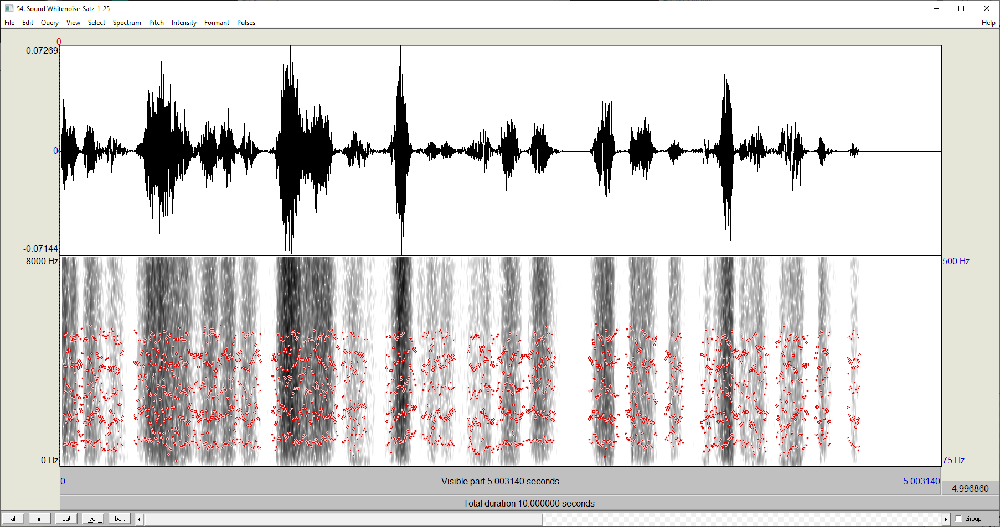
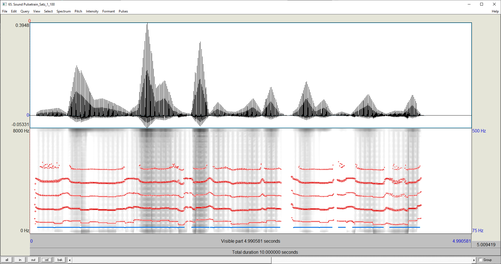
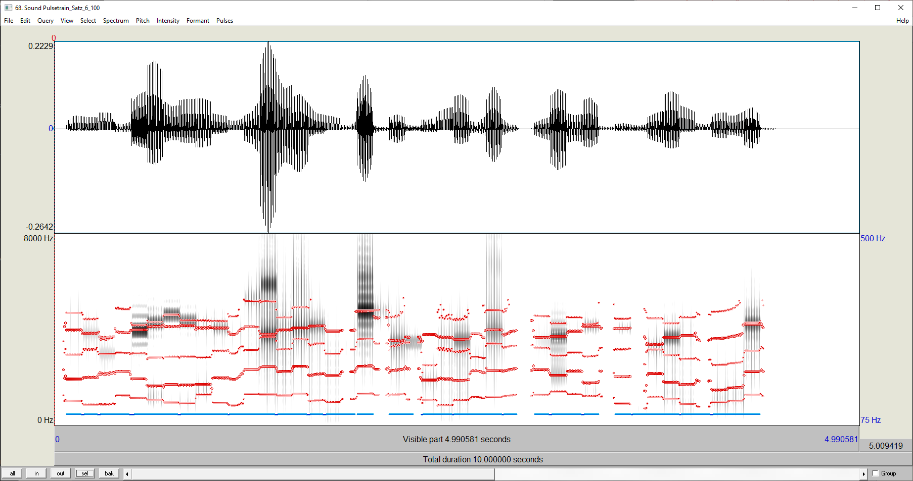
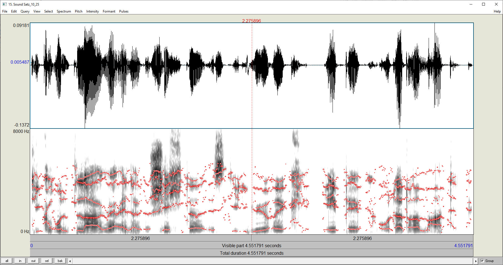
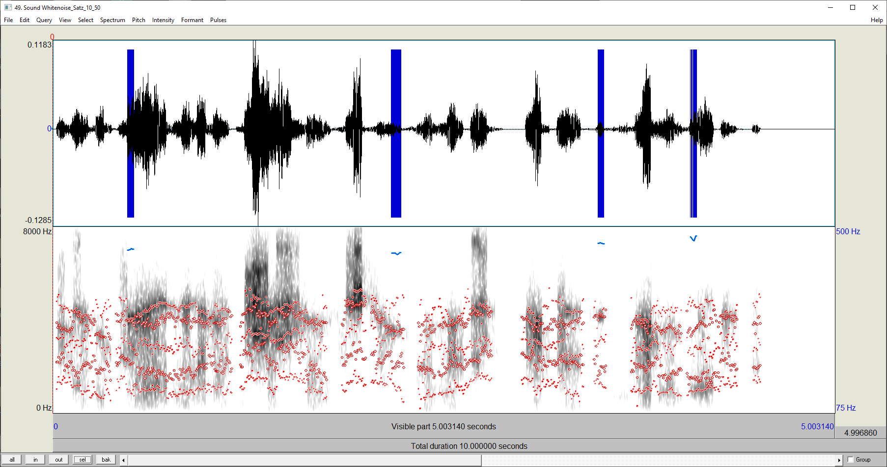
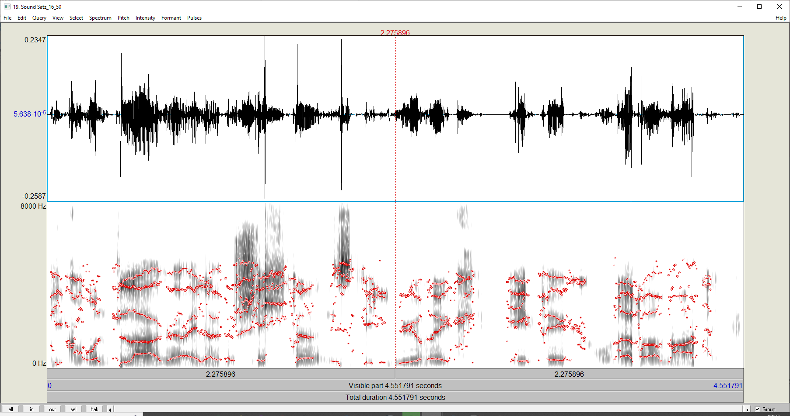

Beschreibung
In dieser Übung beschäftigen wir uns mit der Modell der Spracherzeugung nach dem Quelle- Filter-Prinzip und seiner Nutzung bei der Sprachcodierung und -kompression. Bei diesem Modell wird das Sprachsignal in Anteile zerlegt, die von den Stimmbändern als Oszillator (bei stimmhaften Lauten) oder einer rauschhaften Anregung (bei stimmlosen Lauten) herrühren, d.h. der "Quelle", und solche, die aus der akustischen Filterung der "Quelle" durch den Vokaltrakt entstehen, dem "Filter". Mit Hilfe der sogenannten Linearen Prädiktion (LPC) lässt sich sich das Sprachsignal in der beschriebenen Weise in Quelle und Filter aufspalten. Die Software PRAAT stellt den LPC-Algorithmus zur Verfügung, den wir für diese Übung nutzen wollen. Das Filter, das den Vokaltrakt beschreibt, ist ein digitales Filter, wie wir es in der Vorlesung besprochen haben und wird durch seine Ordnung gekennzeichnet, d.h. die Anzahl seiner Verzögerungsglieder.
Lösung
Verwendete Sprachdatei
Verwendete Vocoderdatei
| Ordnung | Framebreite [ms] | Residualsignal | Rekonstruiert | Pulse Train | Noise | Vocoder | |
|---|---|---|---|---|---|---|---|
| 1 | 25 |  |
|
||||
| 50 | |||||||
| 100 |  |
|
|||||
| 6 | 25 | ||||||
| 50 |
|
||||||
| 100 |  | ||||||
| 10 | 25 |  | |||||
| 50 |  | ||||||
| 100 | |||||||
| 16 | 25 |
|
|||||
| 50 |  | ||||||
| 100 | |||||||
Bei Anwendung des Residuums (16/25) auf die anderen LPC Objekte zeigen sich deutliche Artefakte.
Bei Anwendung auf Objekte erster Ordnung erhalten wir ein abgeschächtes und verrauschtes Signal, unabhängig von der Breite des Analysefensters.
Mit dem Objekt 6. Ordnung zeigt sich wieder eine deutliche Verbesserung der Klangqualität, jedoch sind nun Sprünge im Spektrum und ein leichter Hall erkennbar.
Selbe Artefakte erhalten wir auch bei den Objekten 6. und 16. Ordnung. Hier zeigt sich, dass hauptsächlich die Breite des Analysefensters für die genannten Artefakte verantwortlich ist.
Die Verständlichkeit der Sprache im Residualsignal nimmt mit steigender Ordnung ab. Dabei nimmt sichtlich vorallem die Amplitude bei der Erhöhung der Ordnung ab. Bei der Vergrößerung des Analysefensters sind mehr Frequenzanteile in den Koeffizienten enthalten.
Von der Lautstärke her ist n = 10 nicht mehr zu verstehen. Bei n = 6 lässt sich der Sprachrythmus noch leise erkennen. Die Breite des Analysefensters hat dabei keinen großen Einfluss. Bei höherer Ordnung wird ein Rauschen erkennbar, welches sich bei steigender Breite abmindert.
Für die Übertragung der Informationen werden die Koeffizienten in C = 16bit kodiert. Pro Analysefenster müssen diese Koeffizienten und die Grundfrequenz f0 übermittelt werden. Die Anzahl der Koeffizienten entspricht der Filterordnung und wird mit n angegeben. Die Gesamtanzahl von Analysefenstern ergibt sich aus dem Verhältnis von Samplezeit und Breite des Analysefensters.
Mit 1/tf erhalten wir die Samplefrequenz, welche angibt, wieviele Koeffizientensätze pro Sekunde ermittelt werden.
Die Bitrate wird durch die Formel R = (n+1) * C/tf berechnet und wird in bit/s angegeben.
Die Gesamtmenge an Informationen wird mit B = (n+1) * t/tf * C berechnet.
Die Gesamte Samplezeit beträgt t = 4.552s
| n | tf [ms] | B [kbit] | R [bit/s] |
|---|---|---|---|
| 1 | 25 | 5,827 | 1.280 |
| 50 | 2,914 | 640 | |
| 100 | 1,457 | 320 | |
| 6 | 25 | 20,393 | 4.480 |
| 50 | 10,197 | 2.240 | |
| 100 | 5,099 | 1.120 | |
| 10 | 25 | 32,047 | 7.040 |
| 50 | 16,024 | 3.520 | |
| 100 | 8,012 | 1.760 | |
| 16 | 25 | 49,526 | 10.880 |
| 50 | 24,763 | 5.440 | |
| 100 | 12,382 | 2.720 | |
Die Gesamtmenge an Informationen der Original PCM Datei wird berechnet durch B = C * f * k * t, mit
C = Bittiefe (=16bit),
f = Samplefrequenz (=44100Hz),
k = Anzahl der Kanäle (=1, da mono) und
t = Aufnahmedauer.
Damit ergibt sich
B = 16bit * 44100Hz * 1 * 4,522s = 3.211,892 kbit.
Lassen wir bei der genannten Gleichung die Aufnahmedauer t weg, so erhalten wir die Datenrate pro Sekunde mit
R = 16bit * 44100Hz * 1 = 705,6 kbit/s.
Vergleichen wir dieses Ergebnis mit den Werten aus der Tabelle, ergibt sich, dass die Übertragung der Koeffizienten wesentlich sparsamer ist, als die Übertragung der gesamten PCM Datei.
Betrachtet man die Gleichungen wird ersichtlich, dass die Anzahl an Werten pro Sekunde (f bzw. 1/tf) wesentlich geringer ist. Die Rekonstruktion aus den Koeffizienten und der Grundfrequenz ist somit von der Datenrate her empfehlenswert.